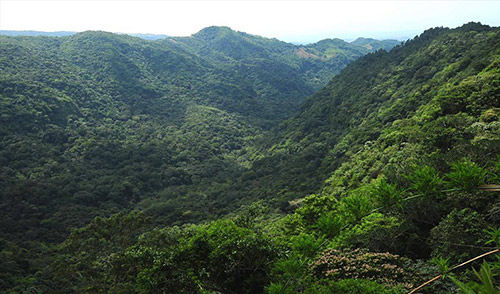

Los parques nacionales y áreas protegidas de El Salvador son lugares donde los turistas pueden generar una conexión profunda con la naturaleza y estar en sintonía con el ambiente natural que les rodea, por medio de caminatas en los recorridos que se ofrecen o impresionantes vistas que se pueden observar desde cualquier punto.
Estos sitios tienen una gran importancia a nivel nacional no solo por su belleza escénica, si no porque también, son ejemplos representativos de ecosistemas de gran valor científico y /o histórico, hábitats para una variedad de especies de animales y plantas, son sitios territoriales de relevancia ecológica, científica, educativa, cultural, recreativa y turística, por lo que reviste un interés de conservación para todos los salvadoreños.
-
Parque Nacional Montecristo
-
Parque Walter Deininger
-
Parque el Imposible

Un hermoso bosque nebuloso espera por ti a las puertas del municipio Metapán, específicamente en el Departamento de Santa Ana. Donde verás converger las fronteras de los países Guatemala, Honduras y El Salvador, por lo que también se le conoce con el nombre de “Trifinio”. Lugar perfecto para los amantes de la cultura en general, pues conocerán objetos antiguos. Su riqueza natural da muestras de árboles realmente antiguos que datan de 700 años, entre ellos los robles y pinares que forman un paisaje impresionante.
Al visitarlo no debes dejar de ir a El Jardín de los Cien años, un magnífico paraíso natural que trae para ti 70 diferentes especies de orquídeas. Debes disfrutar de su ambiente por más de un día, así que recomendamos acampar en las zonas establecidas en el lugar. Donde encontrarás mesas de picnic y cabañas familiares, la mejor opción para estar en contacto con la naturaleza
justo en el Departamento La Libertad. Donde encontrarás un hermoso paisaje natural perfecto para la relajación y el descanso, allí respirarás aire fresco, ofreciendo el oxígeno que necesitas. Por la belleza de la zona te recomendamos acampar, para que recorras el lugar y disfrutes de la naturaleza a plenitud.
Puedes realizar una infinidad de actividades, desde caminatas hasta rapel, todo está en los gustos de cada visitante. No puedes pasar por alto visitar El Mirador, donde podrás observar la belleza del lugar a plenitud. Otro punto muy importante que no puedes dejar de lado es La Poza del Salto, a la que tienes acceso gracias al sendero del río Amayo. Como verás tienes mucho qué hacer en el Parque Walter Deininger, incluso hasta escribir y leer un libro, en caso que lo extremo no sea lo tuyo.
La naturaleza te invita a disfrutar de su ambiente en el departamento Ahuachapán, exactamente entre los municipios San Francisco Menéndez y Tacuba está El Imposible. Una de las reliquias naturales más importantes de El Salvador, que trae para el disfrute de tu vista árboles como: manglares, robles, Algarrobos, Almendros, Conacastes, entre otros. Sin contar las innumerables mariposas que verás posarse en los árboles, mientras que observas como sobrevuelan en el cielo aves de diferentes especies.